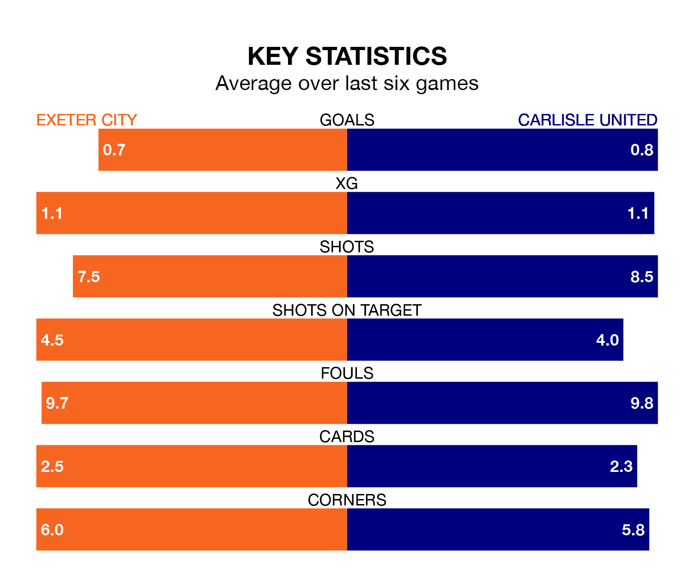

Struggling Carlisle United face Exeter City away at St James Park on Saturday looking to build on a win in their last league outing.
After securing all three points with a 2-1 victory over Port Vale on Monday, Carlisle sit 23rd in EFL League One.
They travel to play an Exeter side 21st in the standings, who lost in their last match, 3-2 against Reading.
In the last 10 years, Exeter and Carlisle have played each other on 16 occasions. Exeter won eight of them, Carlisle four, and they drew four times.
On average, Exeter scored 1.7 goals and Carlisle 1.2 in those matches.
Their last meeting was on August 19, when Exeter won 2-0 away.
Exeter are in disappointing form in EFL League One, with one win and two draws from their last six games.
And also with a win and two draws over that period, Carlisle's form is identical – they have both taken five points from 18.
With 16 goals in 24 games so far this season, City are the league's lowest scorers with 0.7 goals per game. And they are conceding more than average, letting in 36 goals at a rate of 1.5 per game.
United are also below average scorers, with 0.8 goals per game, compared to a league average of 1.3. They have conceded 1.4 goals per game.
Saturday's match will be refereed by Carl Brook, who has taken charge of 10 EFL League One games so far this season, issuing one red card and booking 49 players. He has awarded four penalties.
He is yet to oversee a match featuring either Exeter or Carlisle this season.
Updated: 10:36, 03/01/24